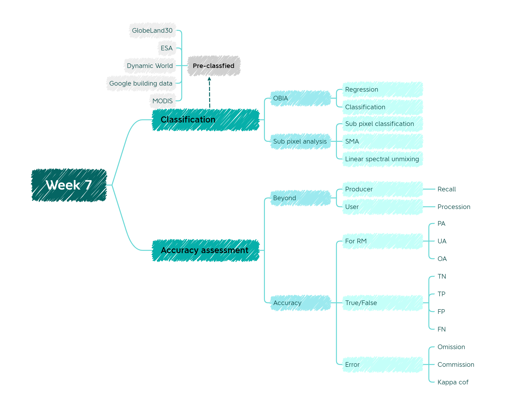

7 Week 7 Classification II
7.1 Summary

This week we continued the content we learned last week Chapter 6 , but go “a little bit” further (yeah, just “a little” for sure)
Alright back to the topic, let’s start from pre-classified data, right now there are lots of institutes providing pre-classified data, which benefit us quite a lot. But we still need to figure out whether use them or classified by ourselves.
7.1.1 OBIA
Compared to traditional image classification which is based on pixel. OBIA segments an image grouping pixels together into vectors rather than per-pixel(GISGeography 2014). This way of classification not only has obvious advantage but also it can by applied to medium and low resolution as well.
7.1.2 Accuracy
Accuracy is a key factor to evaluate of our model is reliable or not. In remote sensing we usually care about the following indicators:
- PA Producer accuracy
\[(\frac{TP}{TP+FN})\]
- UA User’s accuracy
\[(\frac{TP}{TP+FP})\]
- OA Overall accuracy
\[(\frac{TP+TN}{TP+FP+FN+TN})\]
- Kappa coefficient: used for consistency testing and can also be used to measure classification accuracy
\[k = \frac{p_0-p_e}{1-p_e}\]
7.1.3 Beyond remote sensing
7.1.3.1 F1 score
Considering that we cannot own high recall and high precision at the same time. In this case, we introduce a new indicator F1 score which combine above two indicators altogether.
\[F1 = \frac{TP}{TP+\frac{1}{2}*(FP+FN)}\] However F1 score has its own issue as well. To be specific, there is no TN in the equation.
7.1.3.2 ROC Curve
ROC curve also known as sensitivity curve. The reason for this name is that the points on the curve reflect the same sensibility, and they are all responses to the same signaling stimulus, but the result of several different criteria.
So why we use ROC curve? Because ROC cruve has a good characteristic: the ROC curve can be kept constant when the distribution of positive and negative samples in the test set changes. In real scenario, class imbalance often occurs, i.e., there are many more negative samples than positive samples (or vice versa), and the distribution of positive and negative samples in the test data may change over time. See Figure 7.3 for detail of ROC and Precision-Recall curve(a, c are ROC curves, b, d are Precision-Recall curves).
7.1.3.3 Spatial cross validation
Spatial cross validation is used to assess whether there is overfitting when data is autocorrelated.
7.2 Application
Considering that compared to pixel-based approaches, OBIA provide some vital benefits for example: in addition to the spectral values of the input image layer, the shape, texture and associated background variables at the object level can also be incorporated into the classification(Blaschke and Strobl 2001). Reduce noise and enhance classification accuracy.
Recently OBIA has been widely applied on the study of wetland. By using OBIA, it can alleviate wetland’s local spatial heterogeneity, especially with high resolution data. Another contribution of OBIA is that it can facilitate the approach of hierarchy to detection and classification the component of wetland(Dronova 2015).
7.3 Reflection
This week is a little bit complicated to understand I have to say. But after finishing reviewing slides and writing diary, I can combine what I’ve learned over these weeks altogether to form a framework. In the coming weeks, I think I need to spend more time on practical, which can enhance my understanding of the module rather than just understand the concept.